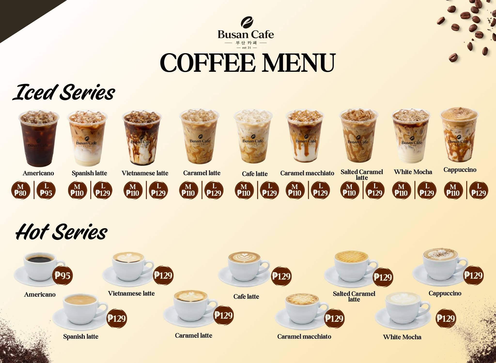
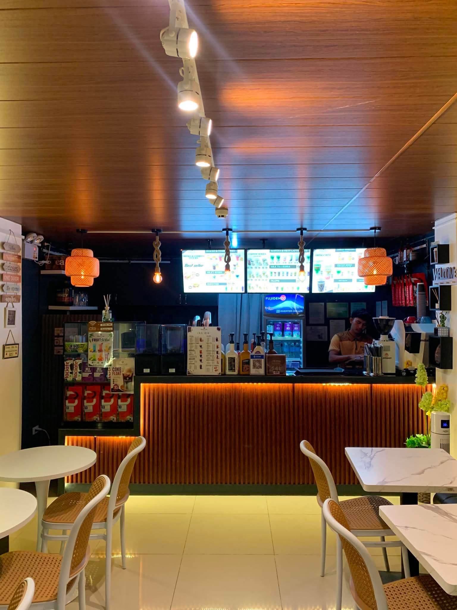
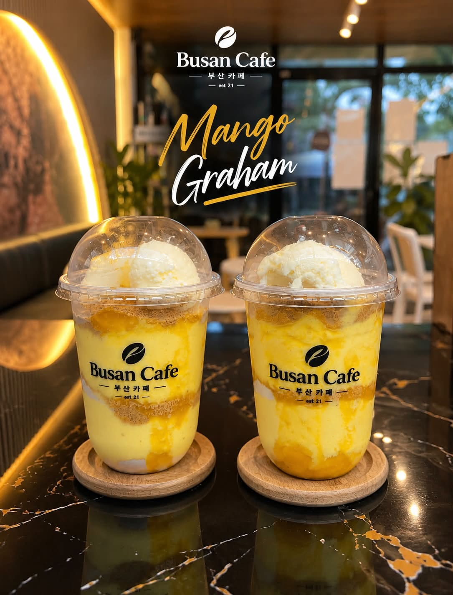
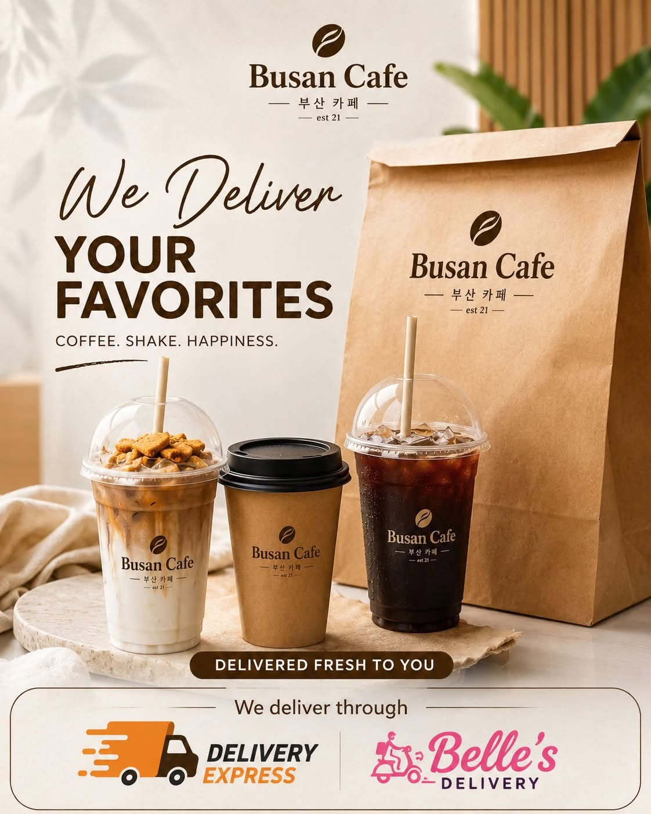

01 Classic comfort
Coffee
Espresso favorites, iced or hot, with a little Busan Cafe magic.
Discover coffeePremium drinks Korean inspired
Freshly made coffee, shakes, and happy moments served with a little Seoul-to-Busan soul.

Est.The Busan way
Busan Cafe brings together the easy warmth of a neighborhood coffee shop and the bright, playful flavors of Korea. Every cup is made to slow the day down, even just for a little while.
Take a seat. Stay a while.
Our storyThe one to try
Bright mango, creamy goodness, and a graham crunch come together in our sunny signature favorite. It is a little vacation in a cup.
Order your favorite

Good things, wherever you are
Drop by for a slow afternoon, pick up a cup on the go, or let us bring a little cafe happiness to your door.
Come say hello
Hours
Monday – Sunday
11:00 am – 11:00 pm